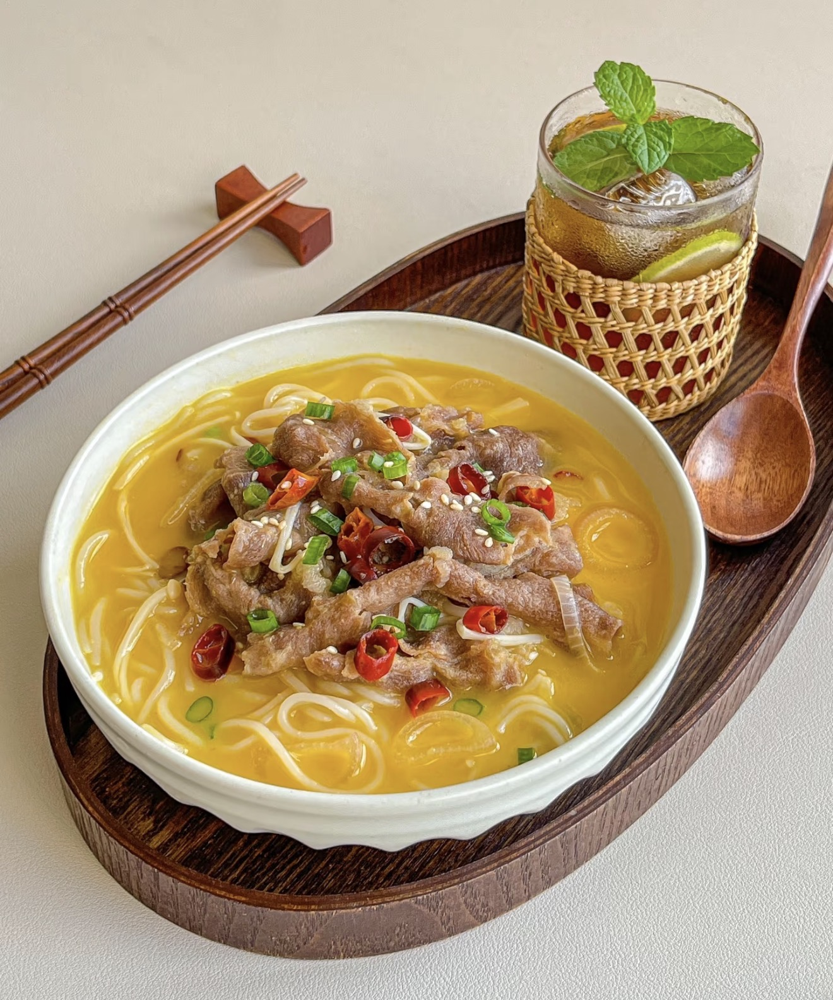

Sour Soup Beef
酸汤肥牛 — A spicy, tangy, and comforting dish with tender beef slices and rich broth.
Ingredients
- Beef slices (500g)
- Enoki mushrooms
- Glass noodles (or vermicelli)
- Baby bok choy (optional)
- Garlic
- Ginger
- Yellow lantern chili sauce
- Pickled chili sauce
- White vinegar
- Salt & sugar
- Cooking wine
- Oil
Directions
- Blanch beef slices with cooking wine, remove and set aside.
- Soak glass noodles until soft.
- Boil enoki mushrooms for 1 minute and remove.
- Heat oil, sauté garlic and ginger until fragrant.
- Add chili sauces and stir until red oil appears.
- Pour in water and bring to a boil.
- Season with salt, sugar, and a splash of vinegar.
- Add enoki mushrooms and noodles, cook until soft.
- Add beef slices back into the soup and cook briefly.
- Transfer to a bowl with vegetables.
- Top with chopped chili and scallions, pour hot oil over for extra flavor.